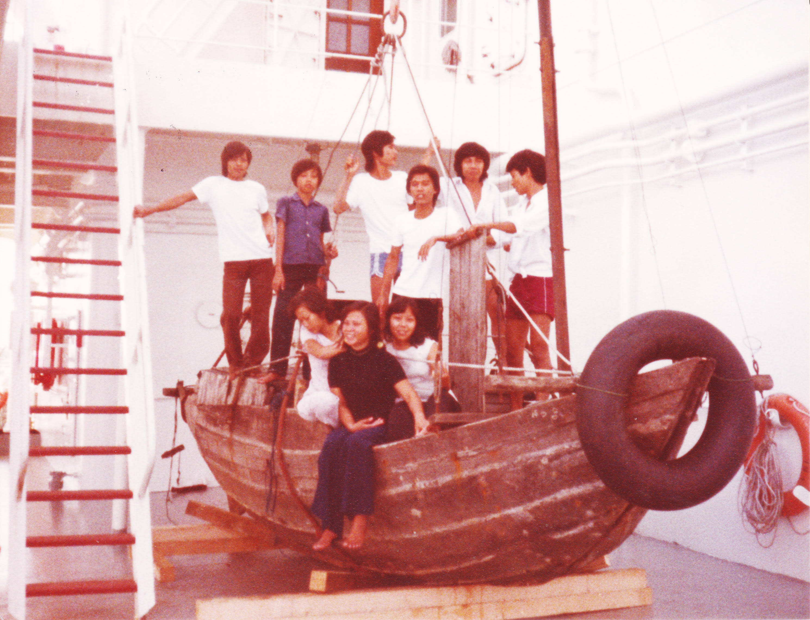

Show Toolbar

Mr. Phùng Văn Tài, 1961
Mr. Phạm Đức Nguyên, 1962
Mr. Trần Đình Hoàng, 1968
Mr. Nguyễn Văn Đình, 1962
Mr. Nguyễn Anh Dũng, 1963
Mrs. Nguyễn Thị Mỹ Phương, 1965
Mrs. Nguyễn Thị Mỹ Hạnh, 1965
Mrs. Phạm Thị Thanh Hằng, 1965
Mr. Nguyễn Xuân Phát, 1972
Mr. Phạm Đức Nguyên, 1962
Mr. Trần Đình Hoàng, 1968
Mr. Nguyễn Văn Đình, 1962
Mr. Nguyễn Anh Dũng, 1963
Mrs. Nguyễn Thị Mỹ Phương, 1965
Mrs. Nguyễn Thị Mỹ Hạnh, 1965
Mrs. Phạm Thị Thanh Hằng, 1965
Mr. Nguyễn Xuân Phát, 1972
Intro
▼
A six-meter, engineless river sampan powered by two oars and a sail. Eight adults and one child
departed
from Vung Tau, Vietnam on September 3rd, 1984 in this boat. They sailed the open seas and survived
treacherous conditions for seven days as ships passed them. On September 10th, 1984, the passengers,
along with the boat, were finally taken aboard the Cetra Corona of Le Havre, a French bulk carrier.
The
refugees disembarked at Nagoya Seaport in Japan, while the boat was taken to France. The boat
remained
in the Musée Maritime et Portuaire in Le Havre for 38 years until it moved to the Vietnamese
Heritage
Museum in February 2023.

Day 1
Day 2
Day 3
Day 4
Day 5
Day 6
Day 7